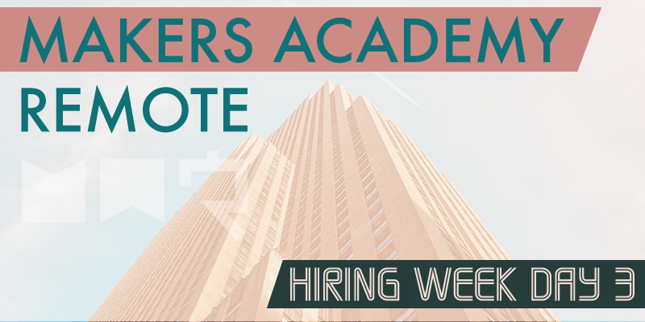

Today, just like yesterday, was focused on practicing tech tests. However rather than trying a couple of different tests today we spent the entire day bringing one test to completion.
Banking test
Today's test tasked us with building a bank accounting system, which needed to have a deposits, withdrawals and statements system. We were given only a basic set of requirements, and very little else. There was no requirement to use any particular language or framework. Right at the top of the requirements list was the line: “When in doubt, go for the simplest solution”.
Interestingly the requirements mentioned that completing the challenge was not mandatory to pass, but having an up to date README, and having implemented Travis CI within the repo was, so I started to work on these features very early. It was also required of course that we work in a test-first manner, with as close to 100% test coverage as possible. However the first step I took on this challenge, following the Agile Methodologies we've been taught, was to write user stories from the given requirements, so that I could later focus on solving each, one at a time. This is the way that Makers Academy has taught us to approach most projects, and I found that it helped a lot.
As for the coding, it reminded me a lot of the coding challenges that we faced during the first two weeks of the course, because I was using just the basic language with no frameworks. This is because, following the keep it simple suggestion I opted to build my solution as a command line Ruby program, using Rspec for testing. While the challenge was similar in style to those early weeks of the course, the code challenge was much stricter. Earlier in the course we were much new to coding, and the primary focus was simply on making sure that our solutions worked. At this stage building a working system is relatively trivial, the challenge is in using the absolute best practices we've been taught to produce a project that would be worthy of sending to a potential employer.
I spent a lot of time at the start planning my implementation, which included scribbling down the program flow on paper. This was vital to work out how best to structure my code, so that I could begin to know how to start testing. I tried to follow the SOLID principles, to keep my code DRY (Don't Repeat Yourself) and paid a lot of attention in particular to ensuring that each of my methods only had a single responsibility, with those methods being extracted into separate classes where it made sense.
I intended to make good use of Git branches for each new feature, but as I began to work that notion simply slipped my mind. I attribute that to the increased pressure that comes with working in a test environment. However I do feel that I produced a strong solution to the challenge, and while there's always more that can be done I was pleased that I'd done everything I could have in the given time.
Afterwards we jumped into a group video meeting so that Sam could scrutinise a few selected attempts. As always it was interesting to see how others had tackled the same challenge, and I found that my method of approaching the challenge was a common one, which is hardly a surprise I guess given our shared learning experiences.
That's a wrap
Today has marked our final day as a group with our coach Sam, and I can't let that pass without mentioning how much of an effect he's had on our Makers Academy experience. Sam has been a fantastic coach, and he's done an amazing job of guiding us through our first three months as junior developers. While I'm sure that all Makers Academy coaches are very knowledgable and great at teaching, I know that some of them are much newer to coding than Sam, and I believe that Sam's wealth of experience as a senior developer has allowed him to share deeper insights with us than would be possible from a less experienced coach. Regardless of that however he's been a fantastic coach, a naturally gifted teacher, and I couldn't have hoped for more.